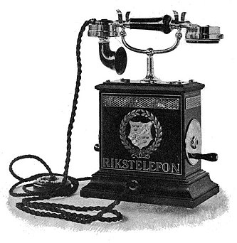

История телефонов
До изобретения телеграфов (оптического и электрического) и телефона для передачи сообщений на большие расстояния использовались примитивнейшие методы, вроде свиста, гонга, дымовых сигналов или барабанного боя. Например, выстрел из винтовки слышен на расстоянии примерно десяти километров, на слышимость сильно влияет наличие поблизости посторонних громких шумов; сигнал может искажаться посторонними выстрелами. Все эти устройства были несовершенны из-за рассеивания звука на расстоянии: чтобы передать сигнал как можно дальше, приходилось создавать промежуточные пункты, на которых другие подаватели сигналов, услышав сигнал предыдущего передающего, передавали звук дальше. Частично эту проблему решала бы передача сигналов через воду или металл, в которых звук распространяется с большей скоростью и затухает несколько позже[4]. Изобретению устройства, которое для передачи и приёма звука использовало бы свойства электричества — того телефона, который сейчас и используется, — предшествовало появление электрического телеграфа и его успешное применение в течение первой половины XIX века. В 1860 году естествоиспытатель Антонио Меуччи опубликовал статью в итальянской газете Нью-Йорка, в которой рассказал о своем изобретении, способном передавать звуки по электрическим проводам. Свой аппарат Меуччи назвал Teletrofono. В 1871 году он решил запатентовать Teletrofono, однако из-за финансовых проблем сделать этого так и не смог. В 1861 году немецкий физик и изобретатель Иоганн Филипп Рейс продемонстрировал другое устройство, которое также могло передавать музыкальные тона и человеческую речь по проводам. Аппарат имел микрофон оригинальной конструкции, источник питания (гальваническую батарею, или - "местную батарею" МБ) и динамик. Сам Рейс назвал сконструированное им устройство Telephone. Телефон, запатентованный в США в 1876 году Александром Беллом, назывался «говорящий телеграф». Трубка Белла служила по очереди и для передачи, и для приёма человеческой речи. В телефоне А. Белла не было звонка, позже он был изобретён коллегой А. Белла — Т. Ватсоном (1878 год). Вызов абонента производился через трубку при помощи свистка. Дальность действия этой линии не превышала 500 метров. Долгое время именно Александр Белл считался официальным изобретателем телефона и только 11 июня 2002 года Конгресс США в резолюции № 269 признал право изобретения телефона за Антонио Меуччи. Александр Белл подал заявку в Вашингтонское патентное бюро на свое изобретение 14 февраля 1876 года. В этот же день изобретатель Элиша Грей из Чикаго подал предварительную заявку на «Устройство для передачи и приема вокальных звуков телеграфным способом». Вскоре Грей отказался от своей предварительной заявки. По этому случаю были многочисленные споры[5] о том, кто первый изобрёл телефон. 7 марта 1876 года Александром Беллом был получен патент на изобретение телефона. Любопытно, что Александр Белл пытался изобрести не телефон, а «гармонический телеграф». В то время в телеграфии испытывался огромный дефицит линий. 25 июня 1876 года Александр Белл впервые продемонстрировал свой телефон на первой Всемирной электротехнической выставке в Филадельфии. B 1877 году изобретатель Ваден применил для вызова абонента телеграфный ключ, который замыкал цепь звонка (позднее ключ был заменён кнопкой). В том же году петербургский завод немецкой фирмы «Сименс и Гальске» начал изготавливать телефонные аппараты с двумя телефонными трубками — одна для приёма, другая для передачи речи. B 1878 году русский электротехник П. M. Голубицкий применил в телефонных аппаратах конденсатор и разработал первый русский телефон оригинальной конструкции, в котором было применено несколько постоянных магнитов. В 1885 году Голубицкий разработал систему централизованного питания микрофонов телефонных аппаратов (система ЦБ - "центральная батарея"). В 1877–1878 годах Томас Эдисон предложил использовать в угольных микрофонах вместо угольного стержня угольный порошок, то есть изобрёл угольный микрофон с угольным порошком, который практически без изменений широко использовался до начала 1990-х годов, а в некоторых местах работает до сих пор. Первые телефоны были напрямую связаны друг с другом из офиса или резиденции одного клиента в другом месте клиента. Будучи неудобными за пределами нескольких клиентов, эти системы были быстро заменены ручными центробежными распределительными щитами. Это привело к появлению стационарной телефонной связи, в которой каждый телефон соединен парой выделенных проводов с местной коммутационной системой центрального офиса, которая перешла в полностью автоматизированные системы, начиная с начала 1900-х годов. Для большей мобильности были разработаны различные радиосистемы для передачи между мобильными станциями на судах и автомобилях в середине 20-го века. Ручной мобильный телефон был введен для личного обслуживания, начиная с 1973 года.
Прорывом в области создания междугородней телефонной связи стало изобретение русского военного связиста Г. Г. Игнатьева. В 1879–1880 он первым в мире разработал систему одновременного телеграфирования и телефонирования по одному и тому же проводу, с разделением частот телефонного и телеграфного сигнала[6]. Это позволило использовать для телефонной связи уже имеющиеся телеграфные линии. В 1881 году первая линия системы Игнатьева соединила две военные части, находившиеся друг от друга на расстоянии 14,5 км[7]. Применение конденсаторного телефона П. М. Голубицкого и "двойного микрофона" системы Е. А. Гвоздева позволили установить телефонную связь по телеграфным линиям, расположенным между Петербургом и Москвой, а также вдоль всех железных дорог. Междугородняя телефонная связь между двумя столицами была впервые установлена в 1889 году,[8] а спустя 9 лет, 31 декабря 1898 года открылась постоянная стационарная телефонная линия Москва — Петербург. В 1883 году подобную систему телефонной и телеграфной связи по одному проводу пытался разрабатывать бельгийский инженер Ф. ван Риссельберг. Однако проведённое в 1887 году сравнительное исследование системы Игнатьева и системы Риссельберга показали явные преимущества отечественной разработки.[9] Первый коммерческий телефонный разговор между Нью-Йорком и Лондоном произошёл 7 января 1927 по трансатлантическому телефонному кабелю. СССР был подключён к Нью-Йорку через этот кабель 14 апреля 1936 года. Первый звонок состоялся между наркомом связи и дежурным телефонно-телеграфной компании Нью-Йорка. Общение проходило на общепринятом на международных телефонных линиях французском языке. Во время Карибского кризиса была создана прямая линия между СССР и США. История дальнейшего развития телефона включает в себя электретный микрофон, наконец окончательно заменивший угольный, громкую связь, тоновый набор, цифровое сжатие звука. Новые технологии: IP-телефония, ISDN, DSL, сотовая связь, DECT.Особенности первых телефонных аппаратов
Поскольку прямого соединения с нужным абонентом, а равно и набора номера в первые десятилетия телефонной связи не существовало и поскольку телефонные станции начала XX века были ручными, первые телефонные аппараты вместо номеронабирателя имели рукоятку индуктора, которую надо было вращать и с помощью которой производился вызов абонентом оператора телефонной станции, с просьбой соединить с таким-то абонентом ("Барышня, соедините, пожалуйста, меня с…"), далее назывался абонент, а позже просто его телефонный номер. Только с 1920-х годов, с появлением возможности прямого соединения с абонентом, у телефонных аппаратов стали появляться дисковые номеронабиратели, которые оставались в обиходе до 1990-х годов, а в отдельных местах продолжают использоваться и сейчас. Кнопочные номеронабиратели появились впервые в США в 1950-х годах. В СССР телефонные аппараты с кнопочным номеронабирателем стали производить только с 1980-х годов. Первые телефонные номера состояли из двух-трёх цифр, но по мере роста количества абонентов число цифр телефонного номера росло. В частности, в Москве в 1930-х годах были пятизначные телефонные номера, с 1940-х шестизначные, а с 30 июля 1968 года — семизначные. Сегодня телефонные номера, состоящие из трёх-четырёх цифр, используются, в основном, во внутренних телефонных станциях крупных промышленных предприятий или учреждений.
Современность
П: В Википедии есть портал «Телефонная связь» Радиотелефон Основная статья: Радиотелефон Представляют собой систему, состоящую из базы, к которой подключаются аналоговые или цифровые абонентские линии от АТС, и одной или нескольких беспроводных трубок, которые могут как связываться между собой, так и звонить по внешним линиям. Могут использовать различные виды модуляции. Работают на разных частотах. Раньше выпускались только аналоговые аппараты с несущей частотой несколько десятков мегагерц, которые были подвержены искажениям и, в основном, были оснащены только одной трубкой. Затем в продаже появились телефоны с несущей частотой 900 МГц и цифровым кодированием сигнала; у них качество звука лучше, увеличена дальность надёжной работы и исключено случайное подслушивание вашего разговора соседями. Следующим шагом были телефоны с несущей частотой 2,4 ГГц. Эти аппараты иногда делали с несколькими трубками, увеличена дальность связи и качество звука. В последнее время[когда?] в продаже появились телефоны с несущей частотой 5,8 ГГц, имеющие дальность связи иногда достаточную, чтобы работать в пределах квартала с хорошим качеством звука без взаимных помех в квартирах; часто позволяют подключать несколько трубок. В современных радиотелефонах наиболее популярным является использование протокола DECT (англ. Digital Enhanced Cordless Telecommunication) — технологии беспроводной связи на частотах 1880—1900 МГц с модуляцией GMSK (BT = 0,5). Радиус действия 50—300 метров. Стандарт DECT не только получил широчайшее распространение в Европе, но и является наиболее популярным стандартом беспроводного телефона в мире, благодаря простоте развёртывания DECT-сетей, широкому спектру пользовательских услуг и высокому качеству связи. ISDN Основная статья: ISDN Система, призванная повысить качество телефонной связи и позволить мультиплексировать голос и данные на одной абонентской линии. Абонентский интерфейс BRI (англ. basic rate interface) представляет собой два пользовательских ОЦК (B-каналы) и канал сигнализации 16 кбит/с (D-канал), мультиплексированные с разделением по времени. Мобильные телефоны Сотовый телефон Основная статья: Сотовый телефон Система радиосвязи, направленная на то, чтобы обеспечить пользователя связью в любом месте. Состоит из большого количества базовых станций, связанных между собой центральными коммутаторами, и сотовыми телефонами. Сотовый телефон при включении регистрируется на ближайшей базовой станции и, если на его номер звонят, центральный коммутатор находит телефон и переводит на него вызов через ближайшую базовую станцию. Во время движения звонок передается от одной базовой станции к другой (handover). Базовые станции называются вышками сотовой связи, существуют микровышки с радиусом вещания 60-100 метров, средние 100—2000 метров и макровышки 2000-10000 метров. Спутниковый телефон Основная статья: Спутниковый телефон Спу́тниковый телефо́н — мобильный телефон, передающий информацию напрямую через специальный коммуникационный спутник. В зависимости от оператора связи, областью охвата может быть или вся Земля, или только отдельные регионы. Связано это с тем, что используются либо низколетящие спутники, которые при достаточном количестве покрывают зоной охвата всю Землю, либо спутники на геостационарной орбите, где они не двигаются относительно Земли и не «видят» её полностью. По размеру спутниковый телефон сравним с обычным мобильным телефоном, выпущенным в 1980-х — 1990-х годах, но обычно имеет дополнительную антенну. Существуют также спутниковые телефоны в стационарном исполнении. Такие телефоны используются для связи в зонах, где отсутствует сотовая связь. Полевой телефон Основная статья: Полевой телефон Полевой телефон — это вид телефона, предназначенный для эксплуатации в особых условиях и обладающий большой мобильностью в эксплуатации. В первую очередь разрабатывался для организации связи во время боя. Впервые полевой телефон был использован Германией во время Первой мировой войны, он заменил собой флажковую систему связи и телеграф. IP-телефония Основная статья: VoIP Технология, направленная на то, чтобы передавать голос, оцифрованный и сжатый с помощью цифровых методов через сети, построенные на IP-технологии. Например, через Интернет. Позволяет значительно удешевить разговоры на большие расстояния. В числе недостатков — проблема задержки сигнала, связанная с особенностями IP-технологии. Начиная с 2005 года, использование специализированных программ (например, Skype) сделало IP-телефонию более доступной, хотя и не бесплатной.